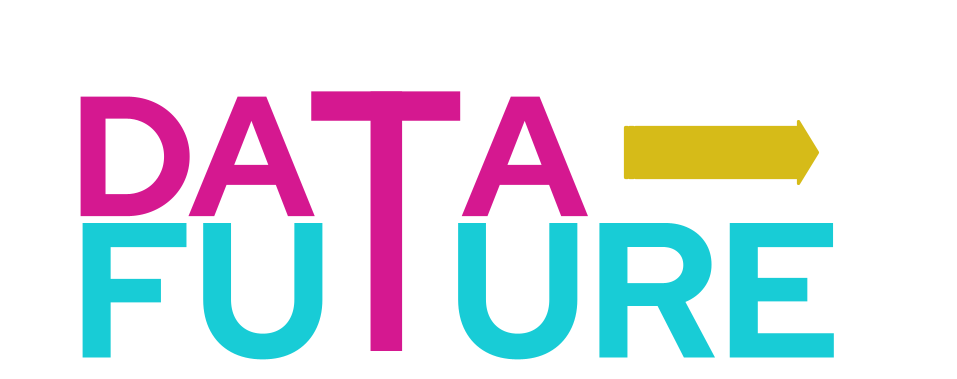
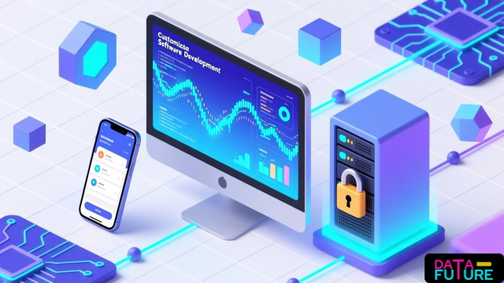

Consultoría Tecnológica
Empresa ecuatoriana fundada por profesionales con más de 15 años de experiencia en tecnología y datos. Acercamos la innovación a personas, empresas e instituciones.
ConversemosAcercar la tecnología a las personas, empresas e instituciones mediante el uso de datos, sistemas y aplicaciones que les permitan afrontar diferentes retos que impiden o retrasan su desarrollo.
Ser líderes en el desarrollo de soluciones tecnológicas innovadoras que permitan utilizar los datos como herramienta para enfrentar los retos del futuro.
Lo que hacemos

¿Ningún SaaS se adapta a tu operación? Desarrollamos sistemas web y aplicaciones móviles a medida que automatizan tus procesos, protegen la privacidad de tus datos y crecen contigo — sin depender de terceros ni pagar licencias eternas.
¿Tus decisiones aún dependen de la intuición? Te ayudamos a construir la infraestructura de datos que tu negocio necesita: desde sistemas de recolección y encuestas hasta paneles BI, análisis exploratorio y geoportales — todo para que los datos trabajen por ti.
¿Qué pasaría si pudieras predecir la demanda, detectar fraudes o segmentar tus clientes automáticamente? Aplicamos modelos de Machine Learning sobre tus datos para generar predicciones y clasificaciones que se traducen en decisiones más inteligentes y rentables.
¿Cuántas horas pierde tu equipo en tareas repetitivas? Diseñamos soluciones con IA Generativa que automatizan procesos, responden consultas, conectan tus sistemas existentes y orquestan agentes inteligentes — para que tu equipo se enfoque en lo que realmente importa.
¿Construiste una aplicación con IA pero no sabes cómo publicarla de forma segura? Auditamos tu prototipo, corregimos vulnerabilidades, migramos datos a bases de datos reales y lo desplegamos en infraestructura cloud robusta — para que tu idea llegue al mundo lista para escalar.
La IA solo transforma tu negocio si tu equipo sabe usarla. Diseñamos talleres prácticos de formación en IA adaptados al nivel y área de cada grupo — desde directivos hasta equipos operativos — para que toda tu organización pueda aprovechar estas herramientas desde el primer día.
¿Tu infraestructura actual frena el crecimiento de tu negocio? Te acompañamos en la migración y despliegue en las nubes líderes del mercado — AWS, GCP y Azure — para que tus sistemas sean más rápidos, seguros, disponibles y económicos de mantener.
¿Tienes una idea de negocio digital pero no sabes por dónde empezar? Te ayudamos a definir tu modelo, elegir las herramientas correctas, construir tu presencia online y arrancar con una estrategia clara — sin rodeos, sin burocracia, enfocados en que empieces a generar valor cuanto antes.
Trabajemos juntos
¿Listo para llevar tu empresa al siguiente nivel? Escríbenos y un especialista te contactará a la brevedad.